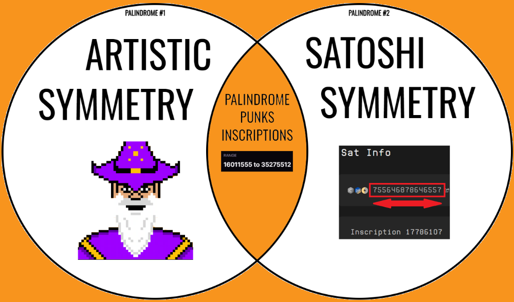
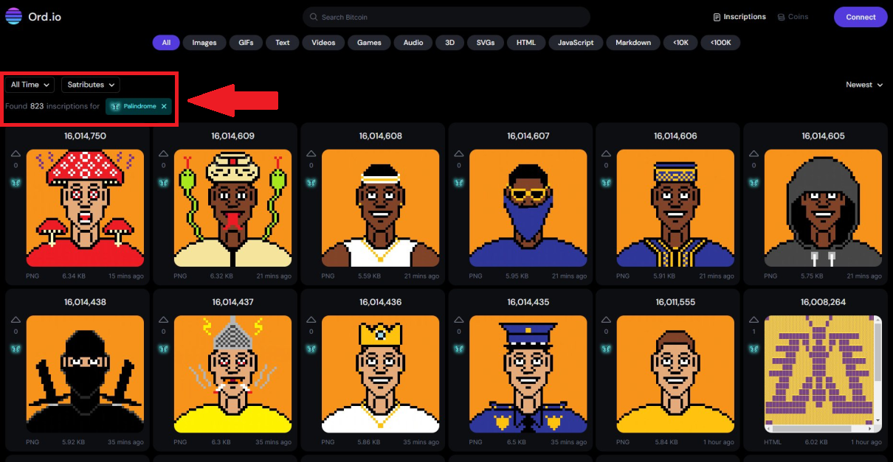

Palindrome Punks
Bitcoin Ordinals collection by blok905.btc
Building [REDACTED]
Bitcoin Ordinals collection by blok905.btc
Building [REDACTED]

They were once the subjects of exploitation, enslaved by Big Brother, but now are liberated and immortalized on the most secure blockchain in existence... Palindrome Punks represent the state of transactional equilibrium facilitated by Bitcoin.
A testament to what is possible for those daring enough to try. Even when success is not guarenteed or even on the horizon. Shear will and determination seperates the punks from the sheep.
The population of punks is a diverse multicultural boiling pot consisting of relatable yet unique characters who will remain on-chain in the ordiverse for the remainder of time. They usually get along pretty well with one another since being liberated from the authoritarian grasp of the maniacal dictators who took pleasure in rattling the cage of their suffocatingly restrictive little world.
However, liberation is a journey, not a destination. It can be short-lived if the tribe is not careful. The punks must work in unison, cohesively and collaboratively, if they plan to continue enjoying the fruits of freedom.
Remember...
Palindrome Punks are proud to represent unique (non-derivative) PFP (profile picture) art on 48x48 pixel canvas hand-drawn by blok905. Each punk is symmetrical along the vertical plane to encapsulate the palindromic properties of the inscription canvas (palindrome sats).

Palindrome Punks embody all of the palindromic principles:
Created amongst the first 1k inscriptions on palindrome sats which cemented their legacy as one of the earliest collections to respresent this satribute. Moreover, while most other palindrome inscriptions represent some form of abstract art, these punks are the pioneers of PFP centric art with respect to their corresponding satribute category.

In true palindromic fashion, the current total supply of punks is 66 making this an exclusive community of digital artifact collectors. However, there is no ceiling for population growth. Once gas fees become more affordable, we may see an influx of punk immigration into the ordiverse. Since they travel by gas guzzling vehicles, economic instability hinders their ease of transporation.